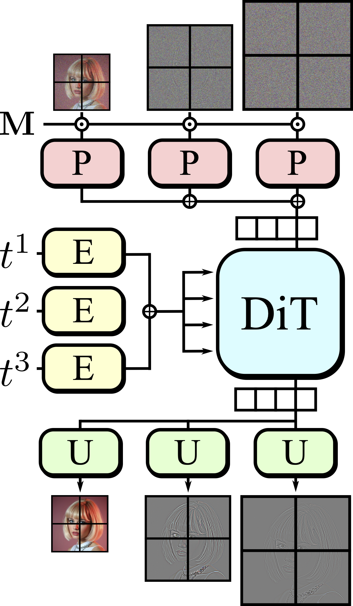
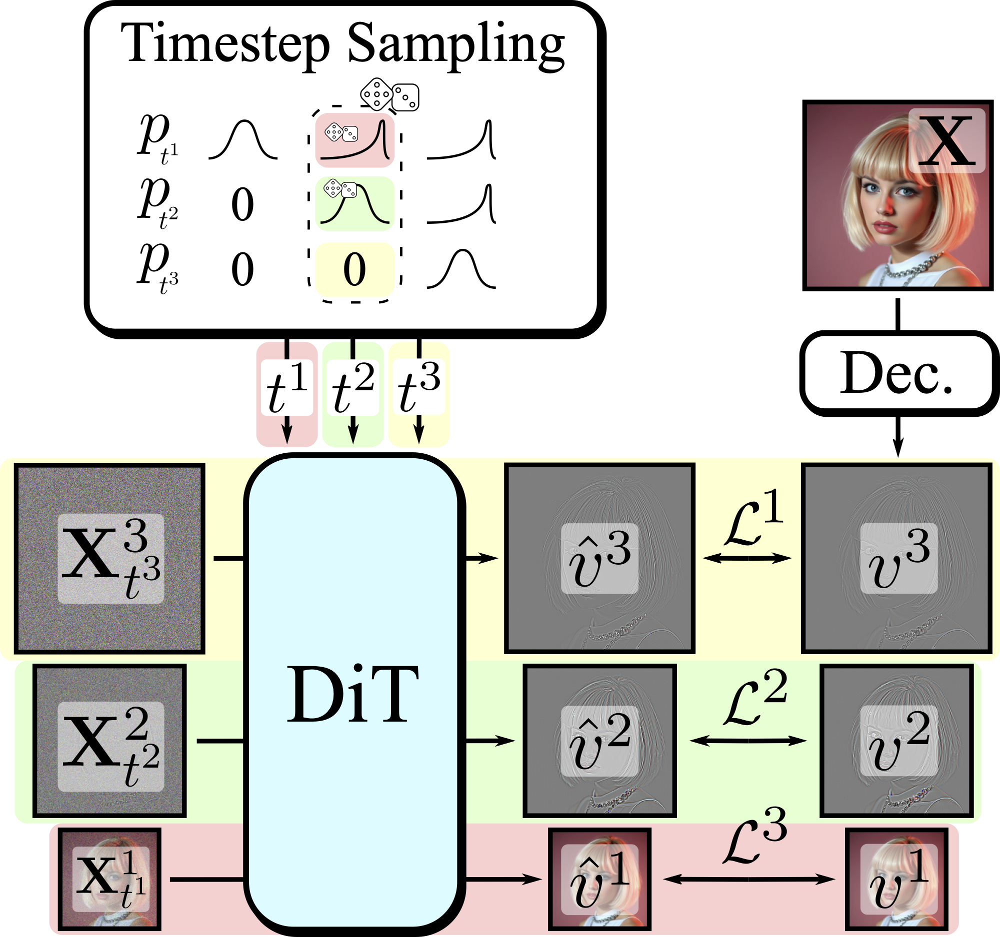
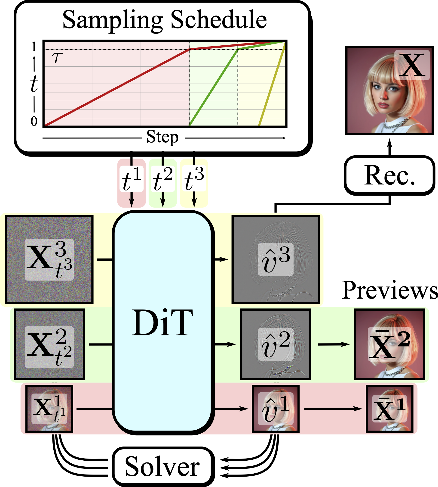

Snap Research
Snap Research

|
Improving Progressive Generation with Decomposable Flow Matching |
Snap Research
Method
Decomposable Flow Matching (DFM): A generative model combining multiscale decomposition with Flow Matching. DFM progressively synthesizes different representation scales by generating coarse-structure scale first and incrementally refining it with finer scales.
|



DFM Architecture: Our framework (DFM) progressively synthesizes images by combining multiscale decomposition with Flow Matching. We modify the DiT architecture to use per-scale patchification and timestep-embedding layers while keeping the core DiT architecture untouched. |
Results
|
Across image and video generation, DFM outperforms the best-performing baselines, achieving the same Fréchet DINO Distance (FDD) of Flow Matching baselines with up to 2x less training compute. |

|
Qualitative Results
Large-Scale Finetuning: Finetuning FLUX-dev with DFM (FLUX-DFM) achieves superior results than finetuning with standard full-finetuning (DFM-FT) for the same training compute.

|
Training From Scratch for Image Generation: When trained from scratch on ImageNet-1k 512px, DFM achieves better quality than baselines using the same training resources.

|
Training From Scratch for Video Generation: DFM is also suited for video generation, achieving better structural and visual quality than baselines when trained on the Kinetics-700 dataset with the same compute budget.
Ablations: We found that DFM benefits from more sampling steps in the coarse-structure stage and needs only a few in the high-frequency stage, and it stays largely insensitive to the choice of sampling per-stage noise threshold, especially at high CFG values.


|
Citation
If you find this paper useful in your research, please consider citing our work:
TODO